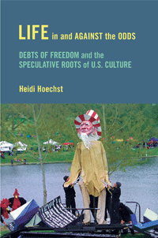

<body bgcolor="#FFFFFF" text="#000000" link="#0000FF" vlink="#CC0000" alink="#CC0000"><center><hr width="350" size="1" align="center" noshade>A persuasive meditation on how capitalism intersects with American nationalism in the making of race and class relations<hr width="350" size="1" align="center" noshade><p><a href="https://cdcshoppingcart.uchicago.edu/Cart/ChicagoBook.aspx?ISBN=9781439912171&&PRESS=temple" target="_top">Buy this book!</a> | <a href="https://cdcshoppingcart.uchicago.edu/Cart/Cart.aspx?PRESS=temple" target="_top">View Cart</a> | <a href="https://cdcshoppingcart.uchicago.edu/Cart/Cart.aspx?PRESS=temple" target="_top">Check Out</a></p><p></p></center><!--none//--><h1>Life in and against the Odds</h1>
<H2>Debts of Freedom and the Speculative Roots of U.S. Culture</H2>
<h3>Heidi Hoechst</h3>
<P>cloth 1-4399-1217-3 $84.50, Oct 15, <FONT COLOR=#990033>Available</FONT>
<br>paper 1-4399-1218-1 $34.95, Oct 15, <FONT COLOR=#990033>Available</FONT>
<br>Electronic Book 1-4399-1219-X $34.95 <FONT COLOR=#990033>Available</FONT>
<BR> 300 pp
6 x 9
</P><BLOCKQUOTE><I>"</i>Life in and against the Odds<i> is an original and provocative book. It is a conceptually exciting, intellectually ambitious work of interdisciplinary American Studies scholarship with serious political aims. Hoechst has developed here an argument about the racialized and gendered character of speculative capitalism in the United States and about the relationship between that economic process and the culture and ideology of American nationalism. This will be an influential book."</i> <br>&#151<b>Seth Moglen</b>, Associate Professor of English, Lehigh University and author of <i>Mourning Modernity: Literary Modernism and the Injuries of American Capitalism</i></I></BLOCKQUOTE>
<P>Somehow people continue to imagine a world of justice against the odds of a deck that has been stacked against them. In her urgent and perceptive book, <I>Life in and against the Odds</I>, Hoechst focuses on the particular circumstances and conditions of different phases of speculative expansion in the United States. She traces the roots of the nation-state to nineteenth-century land markets and slave exchanges. Hoechst also chronicles how these racial foundations extend through corporate capitalism from the 1920s and �30s to the present era of financialized capitalism and the recent housing bubble.
<P><I>Life in and against the Odds</I> identifies where and how speculative nationalism creates roadblocks to freedom. Hoechst retells the history of the United States with a perspective on how�human lives are made, destroyed, reconfigured, and claimed under the systemic violence of a�nation that is rooted in the racializing futurity of speculative capitalism.
<BR>&nbsp;<h2>Excerpt</h2><P>Excerpt available at <a href="http://www.temple.edu/tempress">www.temple.edu/tempress</a></p>
<BR>&nbsp;<h2>Reviews</h2>
<p><i>"There is something encyclopedic about not only the scope and scale of </i>Life in and against the Odds<i>, but also in its mode of writing. Hoechst has assembled a wide-ranging set of topics that span literary, cultural, intellectual, and social histories, and she does so in unexpected and counterintuitive ways that are by turns dazzling and dizzying. Confronting what she views as the prevailing logic of speculation that drives the narrative of U.S. national culture, Hoechst assembles an array of cultural objects for scrutiny that provide an archive that is both familiar and unsettling. Readers of this book will be challenged and compelled by Hoechst�s assemblage."</i> <br>&#151<b>James Kyung-Jim Lee</b>, Associate Professor of Asian American Studies at the University of California, Irvine and the author of <i>Urban Triage: Race and the Fictions of Multiculturalism</i>
<p><i>"Hoechst examines the growth and progression of speculative nationalism in the United States from pre-Revolutionary War to recent events.... [T]he collapse of the housing market is smartly examined as a prime example of the racial divide that we continue to inherit as a result of speculative nationalism.... The book adds to the discourse of American Studies, particularly to the racial and gender inequalities that have permeated the country historically and in present time." </i>
<br>&#151<b><i>Journal of Sociology and Social Welfare</i></b>
<BR>&nbsp;<H2>About the Author(s)</H2>
<P><b>Heidi Hoechst</b> is an activist, scholar, and educator working in the United States labor movement. Contact her at <a href="mailto:hlhoechst@gmail.com" target="new">hlhoechst@gmail.com</a>.</P>
<BR><H2>Subject Categories</H2>
<p><A HREF="/tempress/sociology.html" TARGET="_top">Sociology</a>
<BR><A HREF="/tempress/american.html" TARGET="_top">American Studies</a>
<BR><A HREF="/tempress/social.html" TARGET="_top">Community Organizing and Social Movements</a>
</p>
<p align="center"><a href="https://cdcshoppingcart.uchicago.edu/Cart/ChicagoBook.aspx?ISBN=9781439912171&&PRESS=temple" target="_top">Buy this book!</a> | <a href="https://cdcshoppingcart.uchicago.edu/Cart/Cart.aspx?PRESS=temple" target="_top">View Cart</a> | <a href="https://cdcshoppingcart.uchicago.edu/Cart/Cart.aspx?PRESS=temple" target="_top">Check Out</a></p><p><font face="Arial" size="1"><a href="copyright.html" onMouseOver="window.status='Web Copyright Policy';return true;" onMouseOut="window.status=''" title="Web Copyright Policy">&copy;</a> 2016 <a href="http://www.temple.edu" target="new" onMouseOver="window.status='Link to Temple University home page';return true;" onMouseOut="window.status=''" title="Link to Temple University home page">Temple University</a>. All Rights Reserved. http://www.temple.edu/tempress/titles/2350_reg.html</font></p>